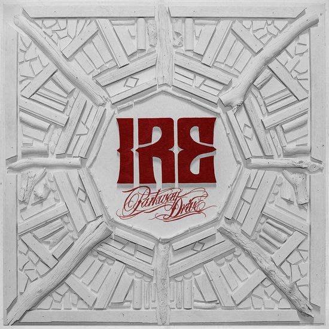

Ire is het vijfde studioalbum van de Australische metalcore-band Parkway Drive. Het album werd op 25 september 2015 uitgebracht, via Resist Records en Epitaph Records, [2] [3] en werd online gestreamd op 20 september. De band probeerde hun gevestigde stijl te veranderen met Ire, en recensenten hebben opgemerkt dat er nieuwe heavy metal-invloeden zijn opgenomen. Op 8 september 2012 werd een eerste song, Dark Days vrijgelaten op het internet. En werd enkele dagen later ook te koop aangeboden via Amazon.com en via iTunes. Het tweede nummer, Old Ghost/New Regrets, werd op 16 oktober naar buiten gebracht. Een nummer dat ze reeds speelden op de laatste tournee voor de opnames van Atlas begonnen waren. Uiteindelijk werd het album zelf uitgebracht op 30 oktober 2012.
In 2013 speelden ze onder andere op Europese festivals zoals Graspop Metal Meeting, Download Festival en Rock On The Beach. In november 2013 zouden ze opnieuw Europa aandoen als deel van de Vans Warped Tour.
In 2016 speelden ze onder andere op het Sziget festival in Budapest, Hongarije.
